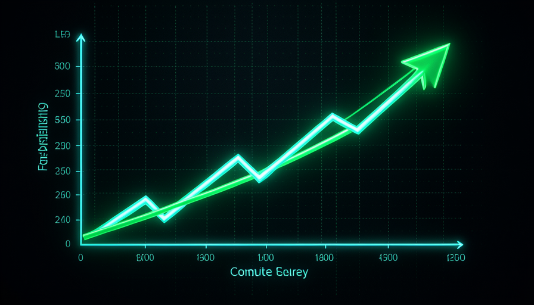
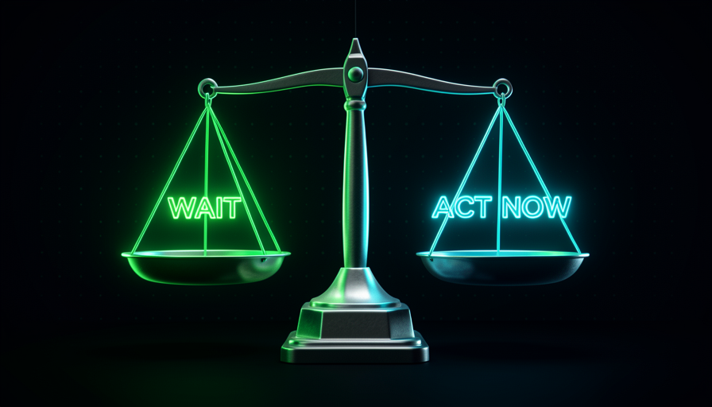

📖 Glossário vivo (leia antes — volte sempre que precisar)
No módulo 1.1 você fixou o vocabulário base (modelo, prompt, agente, skill, codebase, harness). Aqui entram os termos novos deste módulo. Fixe estes antes de seguir:
⏳ O que é o Bitter Lesson
🧠 Imagine assim: dois times de xadrez. O time A passa anos ensinando regras espertas à mão ("nesta posição, faça isto"). O time B só liga um computador gigante que joga milhões de partidas contra si mesmo. No começo o time A ganha. Mas o computador fica mais forte a cada ano que passa — e, lá na frente, atropela todas as regrinhas humanas. Essa é a lição amarga.
Em 2019, o pesquisador Rich Sutton escreveu um ensaio curto chamado "The Bitter Lesson" (a Lição Amarga). A tese: ao longo de décadas de machine learning (ML), sempre que pesquisadores tentaram embutir o "conhecimento humano esperto" no sistema, eles perderam — no longo prazo — para abordagens simples que só jogavam mais compute no problema. Xadrez, Go, reconhecimento de voz, visão: em todos, a força bruta de cálculo passou por cima das otimizações artesanais.
Por que "amarga"? Porque é humilhante para quem é inteligente. A gente quer que a esperteza humana vença. Mas o motor por trás da lição é simples e implacável: o compute cresce muito rápido e fica mais barato ano após ano. Suas otimizações manuais são fixas; o compute é uma maré que sobe sem parar. Como Pocock resume no vídeo, a lição é "confie que a coisa por baixo vai melhorar" — o modelo vai ficar mais forte sozinho, então não vale tanto a pena enfeitar à mão. Erro comum: achar que a Lição Amarga é uma lei mágica que vale para tudo, sempre, sem limite. Não é — ela fala de uma dimensão (o cérebro do modelo). Guarde essa ressalva: o resto do módulo é justamente sobre onde ela não se aplica.
A esperteza humana é uma linha quase reta. O compute é uma curva que sobe — e cedo ou tarde ultrapassa.

⚠️ Erro comum de iniciante
Ler o Bitter Lesson e concluir "logo, qualquer esforço humano é desperdício". Isso é meio caminho da armadilha. A lição vale para o treino do modelo (o que a OpenAI/Anthropic fazem) — não para o seu harness, que você controla e que não melhora sozinho com mais GPUs.
Em 1 frase: a Lição Amarga diz que, no treino de IA, mais compute vence a esperteza humana — porque o compute cresce e a esperteza, não.
Indo mais fundo (opcional): quem é Rich Sutton e por que isso importa?
Rich Sutton é um dos pais do reinforcement learning (aprendizado por reforço), a técnica que ensinou máquinas a vencer humanos em Go e em videogames. Ele viveu na pele a lição: viu métodos artesanais brilhantes serem aposentados por modelos maiores. O ensaio dele virou quase um meme na indústria — todo investidor já citou "Bitter Lesson" pra justificar "é só esperar o modelo melhorar". O nosso curso não nega a lição; ele mostra os limites dela para quem usa IA no dia-a-dia.
🛋️ A tentação de esperar a AGI
🧠 Imagine assim: você quer falar inglês. Alguém diz: "não estuda não — daqui a uns anos vai ter um tradutor perfeito no ouvido, espera por ele". Aí passam os anos, o tradutor mágico nunca fica tão perfeito assim, e você continua sem falar inglês. Quem estudou um pouco todo dia já está conversando.
Da Lição Amarga nasce uma tentação perigosa: "se o modelo vai melhorar sozinho, por que me esforçar? É só esperar a AGI chegar e resolver tudo no meu lugar." Pocock é direto sobre isso no vídeo: "ficar parado esperando a AGI sem fazer nada foi uma ideia muito burra." A frase é forte de propósito — ele mesmo confessa ter flertado com essa atitude e percebeu que estava perdendo tempo.
O problema da espera tem três camadas. Primeira: a AGI pode não chegar quando prometem — promessas de IA atrasam o tempo todo. Segunda: mesmo que chegue um modelo muito melhor, ele não conserta o seu codebase bagunçado nem o seu prompt vago — essas partes (o harness) continuam sendo sua responsabilidade. Terceira, e a mais cruel: enquanto você espera, você não desenvolve nenhuma habilidade. Quem agiu durante a espera chega ao "futuro" com fundamentos afiados; quem só esperou, chega zerado. Esperar parece a opção esperta (deixa a máquina fazer), mas é a que mais custa.
Recuperação rápida: segundo Pocock, qual é o problema de "só esperar a AGI"?
Em 1 frase: esperar a AGI "fazer por você" é, nas palavras de Pocock, "uma ideia muito burra" — a IA já está aqui, o jogo é agora.
⚡ Compute vence otimização (e o limite)
🧠 Imagine assim: jogar mais compute no modelo é como dar um motor mais potente ao carro — melhora o carro todo de uma vez. Mas o motor potente não estaciona sozinho, não escolhe o caminho, não troca pneu. Há partes do problema que nenhum compute resolve: são as suas, do lado de fora do motor.
Onde a Lição Amarga é verdadeira: no cérebro do modelo. Treinar um modelo maior, com mais dados e mais GPUs, realmente entrega ganhos que nenhum ajuste manual alcança. É por isso que o David, na entrevista, faz a pergunta óbvia: "por que não os dois? Trocar o motor melhora tudo instantaneamente." Ele está certo — um modelo melhor levanta a maré toda: cada tarefa fica um pouco mais fácil sem você mexer em nada. Negar isso seria burrice.
Onde ela tem limite: o compute melhora o que está dentro do modelo. Ele não melhora o que está fora — seu prompt vago, seu codebase labiríntico, a falta de uma skill, permissões erradas. Esses pedaços do harness não recebem GPUs; eles só melhoram quando você os melhora. E tem um detalhe que vira o jogo, que Pocock usa o tempo todo: um harness bem feito deixa um modelo mais barato entregar o mesmo trabalho — "tenha um codebase mais fácil de mudar e você pode usar um modelo mais burro pra fazer o mesmo serviço". Ou seja: melhorar o harness é a forma de colher o ganho do compute sem pagar pelo modelo mais caro. Os dois lados se somam — não competem.
🔬 Exemplo resolvido: o mesmo bug, dois caminhos
Pocock conta no vídeo que o modelo Fable achou bugs profundos de segurança que outros não viram. Tentação: "viu? é só esperar o modelo ficar mais forte". A resposta dele é o Bitter Lesson aplicado com limite:
Caminho "esperar o modelo"
"Só o Fable acha esses bugs. Vou esperar todo modelo ficar assim." → Você fica refém de UM modelo caro e não muda nada no seu lado.
Caminho "melhorar o harness"
Pocock: "você acharia esses bugs com modelos mais baratos se olhasse nos lugares certos e desse o prompt/harness certo." → Um cron diário de security review, com modelo simples, varrendo uma parte nova do repo por dia. Resultado igual, custo menor, e seu.
Em 1 frase: o compute melhora o cérebro do modelo, mas tudo que está FORA dele (seu harness) só melhora pelas suas mãos — e um bom harness deixa um modelo barato render como um caro.
🏗️ Por que agir agora
🧠 Imagine assim: uma academia. Esperar "o melhor aparelho do mundo" pra só então treinar é desculpa. Quem entra hoje e treina com o aparelho que tem já está ficando forte — e quando o aparelho novo chegar, vai usá-lo muito melhor do que quem só ficou esperando na recepção.
A saída da armadilha tem nome: fundamentos. Pocock insiste: "as pessoas focam na coisa errada — o brinquedo novo e brilhante — quando deveriam focar no que vem funcionando há 30-40 anos." Organizar código, escrever um pedido claro, escrever testes, documentar bem: nada disso expira quando sai um modelo novo. Pelo contrário — quanto melhor o modelo, mais ele aproveita um harness bem cuidado. Os fundamentos são o ativo que valoriza; o hype do modelo da semana é o que evapora.
Tem mais um motivo prático e poderoso para agir agora: o setup agent-agnostic. Se você construir seus prompts, skills e codebase de um jeito que não amarra a um modelo só, então — quando o modelo melhorar — seu trabalho de hoje continua valendo e fica até melhor. É o melhor dos dois mundos: você colhe o ganho do Bitter Lesson (modelo mais forte chegando) sem ter ficado parado esperando por ele. Pocock fecha com humildade: "não sou um guru/comentarista — estou fazendo o melhor com o que tenho agora." Esse é o espírito: jogar com o que existe hoje, em vez de apostar tudo num amanhã incerto.

✓ Agir agora (fundamentos)
- • Melhorar o setup um pouco todo dia.
- • Aprender o que dura 30-40 anos.
- • Manter tudo agent-agnostic.
- • Usar o melhor modelo disponível hoje.
✗ Esperar (a armadilha)
- • "Daqui a pouco a AGI resolve."
- • Não tocar no codebase nem no prompt.
- • Apostar tudo num único modelo futuro.
- • Chegar ao futuro sem habilidade nenhuma.
Em 1 frase: aja agora nos fundamentos e mantenha tudo agent-agnostic — assim você colhe o modelo melhor do futuro sem ter desperdiçado o presente.
⚖️ O equilíbrio de Pocock
🧠 Imagine assim: um corredor que troca de tênis novo toda semana atrás do "tênis perfeito" e nunca corre — versus um corredor que treina todo dia E compra um tênis bom quando aparece. O segundo ganha a maratona. Pocock não é "anti-modelo"; ele é "modelo bom + treino constante".
Aqui está o coração do módulo, e o ponto onde muita gente entende Pocock errado. Ele não diz "ignore o modelo, só mexa no harness". Ele diz que é 50/50 (e não 90% modelo / 10% otimização, como a maioria pensa). Quando o David provoca — "use os dois: o melhor modelo E o melhor harness" — Pocock concorda no fim: "é 50/50; o problema é pensar pelo modelo primeiro." A ordem importa. Se você começa pelo modelo, perde o foco nos fundamentos: "se eu super-otimizo em torno de um modelo, eu perco o foco nos fundamentos."
Repare na nuance: Pocock admite que ele mesmo pode estar caindo na Lição Amarga ao gastar tanta energia no harness em vez de só confiar que o modelo vai melhorar. Ele não esconde esse risco — e essa honestidade é o que torna o equilíbrio confiável. A síntese prática que sai daí: melhore seu harness agora (você controla, é metade do jogo) e use o melhor modelo disponível (é a outra metade, e vem de graça em ganho quando você troca). O David descreve exatamente essa postura: ativamente melhora o setup todo dia e usa o modelo mais forte que existe. Não é "ou" — é "e". Cair na armadilha é tratar como "ou".
Em 1 frase: é 50/50 — use o melhor modelo E melhore o harness; o erro é pensar pelo modelo primeiro.
🎯 Aplicar sem cair na armadilha
🧠 Imagine assim: toda vez que você pensar "vou esperar o modelo novo resolver isso", troque a frase por uma pergunta: "o que eu posso afinar no meu lado hoje?". Esse simples reflexo já te tira da armadilha do Bitter Lesson.
Fechando o módulo de forma prática: a Lição Amarga é real, mas como princípio de treino de IA — não como desculpa para você ficar parado. Sempre que a tentação de "esperar" bater, passe a decisão pelo filtro abaixo. Ele transforma o medo de "estou caindo no Bitter Lesson?" numa checagem objetiva. Copie e cole quando se pegar esperando:
Peguei-me "esperando o modelo melhorar"? Rode o filtro: [ ] É treino de modelo (interno)? -> ok, isso melhora sozinho; nao e minha tarefa. [ ] E harness (prompt/skill/codebase/permissao)? -> NAO espera; e comigo, agir HOJE. [ ] Meu setup esta agent-agnostic? -> se sim, o ganho do modelo futuro ja esta garantido. [ ] Estou usando o MELHOR modelo disponivel agora? -> use; e a outra metade (50/50). Regra: pense pelo HARNESS primeiro. E "E" (modelo + harness), nunca "so esperar".
Recuperação rápida: qual é o equilíbrio que Pocock defende?
Indo mais fundo (opcional): "compre o cadeado" — o Bitter Lesson aplicado
Pocock usa uma analogia ótima: "se alguém fica roubando sua bicicleta, talvez compre um cadeado." Traduzindo: quando o modelo achou um bug que você não viu, a lição não é "espera o modelo ficar mais esperto" — é "construa um sistema que continue achando esses bugs no futuro" (ex.: um cron diário de security review com um modelo simples). Isso é agir no harness em vez de esperar pelo compute — você verá isso em detalhe na Trilha 4 (Sistemas auto-melhoráveis).
Em 1 frase: sempre que pensar "vou esperar o modelo", pergunte "o que afino no meu harness hoje?" — e aja.
🧾 Resumo do Módulo
Próximo módulo:
1.3 — Setup agent-agnostic: como blindar seu harness para que ele sobreviva à troca de modelo.